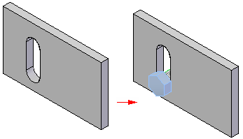
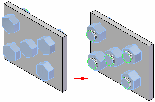

Fastener System command bar
- Steps
- Select Top Hole step
-
Defines the top holes you want to fill with a fastener. You can select one or more circular edges. The circular edges you select must all be the same diameter. The parent feature of the circular edge must penetrate through the part.
- Select Bottom Hole step
-
Defines the bottom holes you want to fill with a fastener. You can select a single circular face that represents the bottom extent for all the fasteners you want to place. The cylindrical face can be constructed from a hole or cutout feature. If the circular face is not threaded, it must penetrate through the part. If the circular face is threaded, it can be a finite depth that does not penetrate through the part.
- Define Fastener step
-
Displays the Fastener dialog box so you can select the fasteners you want to place. The Fastener dialog box presents a list of appropriate fasteners based on the elements you selected in the previous steps and the fasteners in your database.
- Finish/Cancel
-
This button changes function as you move through the fastener definition process. The Finish button constructs the feature using input provided in the other steps. Once you construct the feature, you can edit it by re-selecting the appropriate step on the command bar. The Cancel button discards any input and exits the command.
- Command bar options
- Select Top Hole step options
- Select
-
Sets the edge selection method for defining the top holes.
-
Single—Selects one or more circular edges.
-
All on Face—Selects all the circular edges on a face by selecting a single circular edge that lies on the face.
-
Top Hole by Plane—Selects the top plane you want the fastener to mate to. Use this option to place Fasteners into a slot.

-
- Accept (check mark)
-
Accepts the selection.
- Deselect (x)
-
Clears the selection.
- Other command bar options
- Name
-
Displays the feature name. Feature names are assigned automatically. You can edit the name by typing a new name in the box on the command bar or by selecting the feature and using the Rename command on the shortcut menu.
- Flip
-
Flips the part to the opposite side of the tangent face or plane.

How do I
Place fasteners in an assemblyLook up more details
Fastener System commandFastener System dialog box